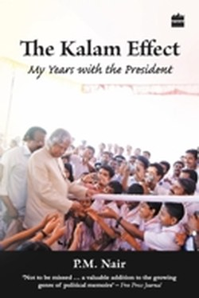

Library › Self-Improvement
The Kalam Effect — Summary & Key Lessons

What made A.P.J. Abdul Kalam the 'missile man' who became a people's president — an inside portrait.
📖 OPEN THE FULL INTERACTIVE BREAKDOWN →🌐 Read it in Hindi, Hinglish, Gujarati, Tamil & 22 more languages — free, with audio.
💡 The Big Idea
Kalam's career ran from a paper-boat childhood in Rameswaram to directing India's missile programme to the presidency. This biography by his close aide identifies the 'Kalam effect': leading by example at a scale so quiet it is almost invisible — waking before 5 am, learning continuously, giving credit away, and treating failure as data. His life is a case study in converting ambition into systems.
🧠 The 5 Key Lessons
Lesson 1: Begin Before the Day Does
Chapter 1: Rameswaram
Kalam's discipline started in childhood: he rose before dawn to deliver newspapers, studied under streetlights, and never complained about condition — he adjusted to it. The pattern of a great life was formed early: purpose first, comfort second. His aides note the same schedule survived to the presidency.
📖 Example: A habit formed at 12 (morning delivery + study) carried a man to the Rashtrapati Bhavan — the routine was the rocket. Read the full example →
⚡ Do this: Own your first hour tomorrow: one purpose-driven task before any distraction.
Lesson 2: Give Credit Away
Chapter 2: Teamwork
The Kalam effect in action: at ISRO and DRDO he insisted the team own the achievement. When the SLV-3 launched, he named everyone but himself; when it failed, he took the blame. This asymmetry — credit flows down, blame flows up — created loyalty no paycheck can buy.
📖 Example: After a win, the leader says 'we'; after a loss, the leader says 'I'. Teams follow that leader into fire. Read the full example →
⚡ Do this: In your next win, name three people publicly; in your next loss, take the first sentence yourself.
Lesson 3: Failure Is a Step, Not a Verdict
Chapter 3: SLV-3
The 1979 SLV-3 launch crashed into the Bay of Bengal. The committee wanted to cancel; Kalam and his team asked for a year. In 1980, the same rocket succeeded. His method: separate the failure of the system from the worth of the people, find the single technical cause, and run the experiment again.
📖 Example: A failed launch is a failed test; a cancelled programme is a failed dream. Distinguish the two. Read the full example →
⚡ Do this: For your last failure: write the single technical cause, the one fix, and the re-test date.
Lesson 4: Science Meets Compassion
Chapter 4: The People's President
Kalam carried the scientist's rigour into public life — visiting students, answering every letter, prioritising children's futures. He treated dignity as an engineering parameter: a country functions well when its people believe in it. His popularity came not from rhetoric but from consistency between what he said and what he did.
📖 Example: He flew economy, carried his own luggage, and walked to school functions — credibility earned in inches. Read the full example →
⚡ Do this: Find one place where your actions and your stated values diverge; close the gap this month.
Lesson 5: Dream Big, Structure Small
Chapter 5: Vision 2020
Kalam's signature move: enormous vision translated into a small number of concrete missions (food, water, energy, education, healthcare, infrastructure). He never asked 'is this too big?' — he asked 'what is the first step?' A dream without a first step is a wish; with one, it is a programme.
📖 Example: Vision 2020 was a national dream built from five tangible missions — each with measurable targets. Read the full example →
⚡ Do this: Take your biggest dream and write its first concrete step for this week.
✅ 5-Step Action Plan
- Claim the first hour of your day for one purpose task.
- Practice credit-down, blame-up in your next win and loss.
- Convert one failure into: cause, fix, re-test date.
- Close one values-behaviour gap this month.
- Write the first step of your biggest dream — and do it.
⚠️ When This Doesn't Work
This is an admiring account by a colleague, not a critical biography — it smooths the difficult chapters of Kalam's political years. Still, the habits it documents are verifiable and worth copying.
💀 The Graveyard Proves It
📷 NASA Mars Climate Orbiter — The $327M Metric Mix-Up. Burn: $327.6M spacecraft Read the full case study →
💬 Best Quotes from The Kalam Effect
- “Dream is not that which you see while sleeping, it is something that does not let you sleep.”
- “If you want to shine like a sun, first burn like a sun.”
- “Failure will never overtake me if my determination to succeed is strong enough.”
Interactive version: mark lessons as read, listen in your language, share quote cards.